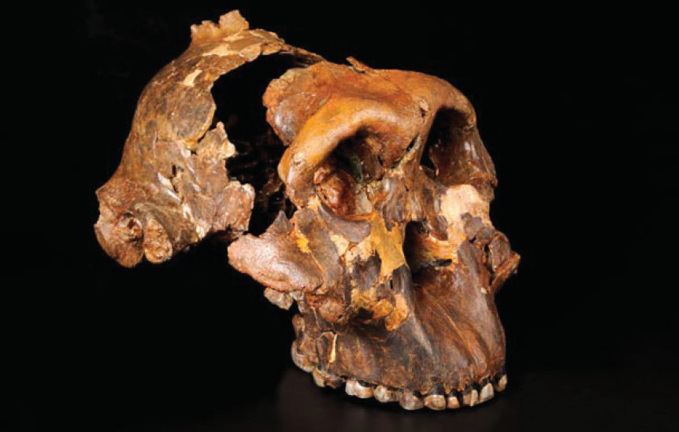

Likewise, documents may be lost or misplaced in the archives. In such cases, researchers will not get all the information they need.
Exercise 1.3
With vivid examples, briefly explain how Tanzanians can benefit from museums.
Archaeology
Archaeology is the study of past human activities through material remains. Such remains include pottery, hoes, utensils, bows, arrows, animal bones, seeds, ancient buildings, irrigation canals, and iron-smelting furnaces. These remains are also called archaeological materials. A person who studies archaeology is called an archaeologist. Such people include Dr Louis Leakey and his wife, Dr Mary Leakey. These archaeologists worked at the Olduvai Gorge in north-eastern Tanzania in Arusha Region. They discovered the oldest human skull in 1959. They named the skull Zinjanthropus boisei. The skull is kept in the National Museum and House of Culture in Dar es Salaam. Figure 1.7 shows the skull of Zinjanthropus boisei.

Another example of an archaeologist is Professor Felix Chami, a Tanzanian scholar who has conducted extensive archaeological studies along the coast of East Africa.
Moreover, archaeological sites are places in which material remains of past human activities are found. In these sites, material remains may be found either above or under the ground, while some are found in caves.
Archaeologists use survey and excavation methods to discover archaeological materials. Using the survey method, archaeologists walk randomly or systematically around the area to find archaeological materials on the earth’s surface. Conversely,